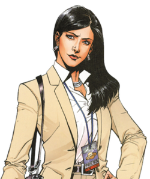

Noticias de última hora
|
Superman ha muerto | |
|
Lois Lane acude al entieero de Superman |
 |
.jpg) |
'Lex Luthor ¿Presidente?' El multimillonario Lex Luthor se presenta para las eleciones a la presidencia. |
|
¿Batman o Superman? |
|
.jpg)
'El ultimo adiós, del ultimo gran héroe'
A los Ciudadanos de Metrópolis:
Ustedes me han recibido en su ciudad y me permitieron hacerla mi hogar. Estaré siempre agradecido por ello. Por lo cual, no puedo irme sin decir adiós. Este periódico me ha hecho algo que ustedes piensan que soy -un ejemplo, un símbolo, un "héroe". Pero la verdad es, yo soy simplemente uno de ustedes. La única diferencia es que mis días en las sombras y las noches en las calles me han permitido ver aquello que ustedes han perdido de vista -el bien en cada uno de ustedes.
He visto gente ordinaria hacer cosas extraordinarias. Les he visto ayudarse mutuamente cuando han estado caídos. Les he visto mantenerse en pie juntos cuando las circunstancias son duras. Y he visto los actos más pequeños hacer los grandes cambios. Si he hecho algo bien, yo espero que les halla ayudado a comprender que una persona puede hacer la diferencia en la vida de otros -que Metrópolis no necesita un héroe. Tengan fe en ustedes mismos, y encontrarán esperanza en cada otro.
Recuerden, no es la máscara la que hace al héroe. Son las decisiones que hacemos y el deseo de hacer lo que esta bien. He visto ese deseo en todos ustedes. Ello me inspira a prometer que haré todo en mi poder para proteger esta ciudad -sin embargo, no puedo prometer que estaré cerca por siempre. Un día, puede haber una pelea que no pueda ganar.
Pero si ese día llega, por favor, continúen luchando sin mí para hacer el mundo un mejor lugar. Sean los héroes que sé que son.